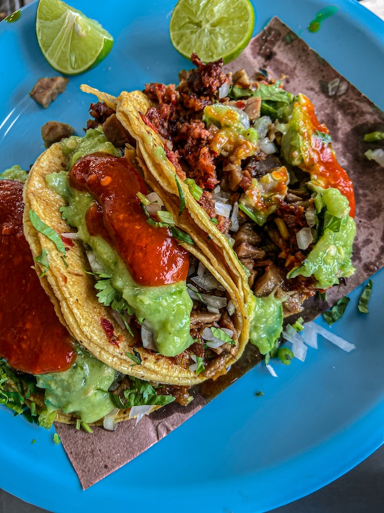

Swedish Tacos

Tacos! The Swedish Way
Have you ever tried Swedish tacos? Maybe you love it as much as I do? In
Sweden, "Taco Friday" is a real thing. Yep.
In this recipe I will show you the traditional way of making a Swedish
Taco.
Ingredients
- 400g ground beef or vegetarian option
- 2 onions
- 2 red peppers
- some lettuce
- 2 tomatoes
- half a cucumber
- hot/medium salsa
- guacamole or avacado
- 1 tin of corn
- tortillas of your choosing
Steps
-
Cook the ground beef or your vegetarian option, cook it up until it's
completely browned.
-
While cooking your ground beef or vegetarian option, start to chop the
vegetables.
-
When the beef is ready - just throw it onto your tortilla with your
vegetables, then add the guacamole and hot salsa. There you have it! A
traditional Swedish Taco.